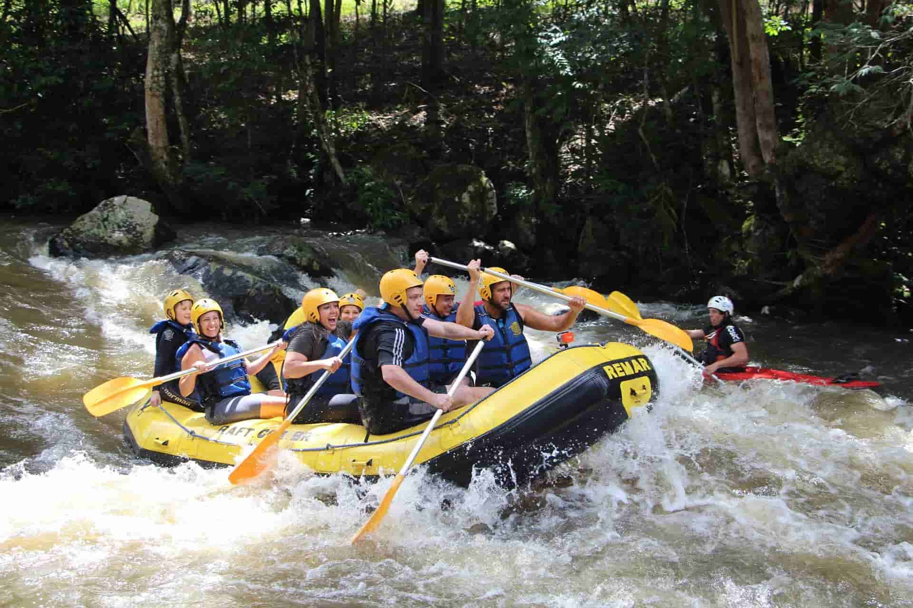
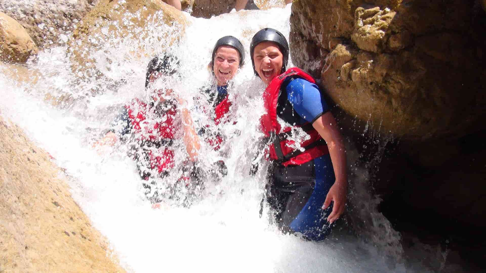

Rafting Adventure

A Rafting Adventure começou com uma ideia simples: levar alegria e adrenalina para quem busca emoção em meio à natureza. Nossa missão é transformar cada descida em uma memória inesquecível, com segurança, diversão e respeito ao rio; a nossa visão, ser a empresa de rafting mais querida do Brasil, inspirando cada vez mais pessoas a remar conosco. Porque aqui cada corredeira é uma nova história — e remando juntos, a aventura fica ainda melhor.
História
A Rafting Adventure nasceu no meio de uma enchente — ou melhor, da vontade de não desistir depois dela. Fundada por um grupo de amigos que começou com um único bote remendado e mais coragem do que dinheiro, a empresa levou os primeiros anos aprendendo na marra: dias sem passageiros, rios traiçoeiros, equipamentos que quebravam na hora errada. Mas cada obstáculo virou ensinamento — quando faltava cliente, sobrava treino; quando faltava verba, sobrava criatividade. O que sustentou a empresa nos momentos difíceis foi exatamente o que ela prega nas corredeiras: nunca remar sozinho. Cada guia, cada piloto, cada pessoa que passou pela equipe deixou um remo na história, e a Rafting Adventure honra todos eles — pagando em dia, ouvindo com atenção e crescendo junto. Hoje, com uma frota de botes coloridos e milhares de passageiros felizes, a empresa não esquece de onde veio: segue honesta nos preços, transparente nas condições e generosa no reconhecimento, porque sabe que a verdadeira conquista não é chegar ao fim da descida — é chegar junto, respeitando cada pessoa que ajudou a remar.
.jpg)